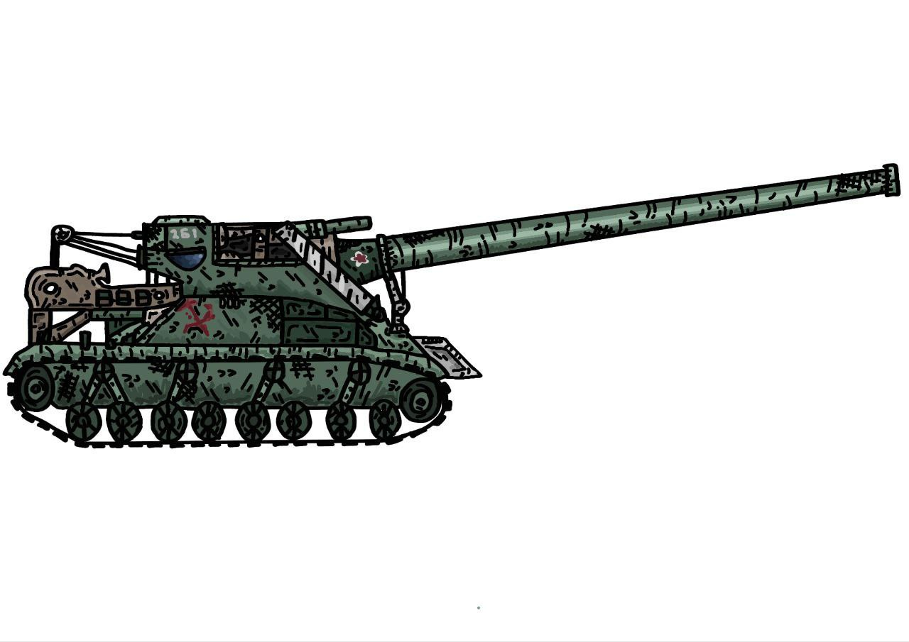
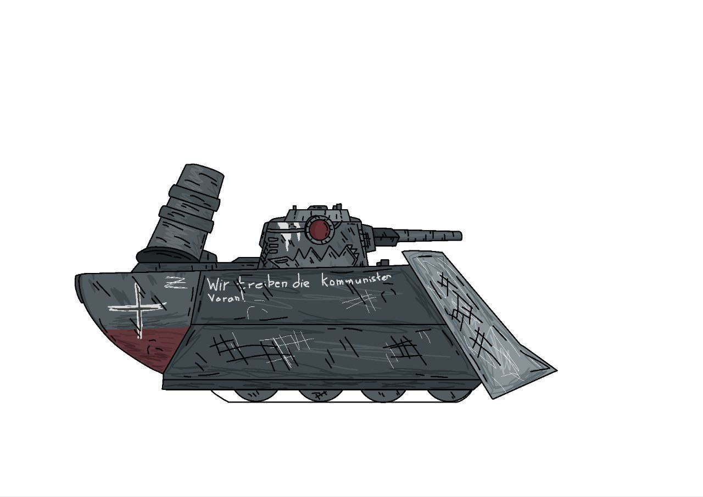

"Канал Komert о мультфильмах про танки. На этом вики мы пишем статьи на тему этого канала - о персонажах,местах,сезонах,сериях,сюжетных линиях и многом другом.
.jpg "T-26")
Имя: генерал т 26 (Иосиф Антонович)
Пушка: 60мм
Броня: слабая
История:
Генералом стал в 1917г. По словам жителей СССР - лучший генерал Много сражался и очень опытный На данный момент ему 56 лет
Имя: Смерть
Первое появление в серии КВ-12,ТГ 5 ПРОТИВ Смерть
Пушка: 666мм
Всп.Пушки: 40 мм,60 мм и 150 мм
Броня: Выше среднего
История: Самый преданный и сильный приспешник левиафана Является полудемоном Учавствовал в 1 мировой войне На данный момент ему 41 год
Имя:Заместитель генерала шаро танк (Матвей Олегович)
Пушка: 35мм
Броня:слабая
История: Заместителем стал в 1940г. Очень хороший танк с которым интересно общаться На данный момент ему 17 лет
Имя:тёмный кв-12
Пушка: 220 мм
Доп.Пушки:150 мм и 170 мм
Броня:крепкая
История: История: КВ-12 попал в плен и его сделали таким. На данный момент ему 37 лет
Имя:Истинная Смерть
Пушка: 888 мм
Доп.Пушки:50 мм и 260 мм
Броня:крепкая
История: История: Самый преданный и сильный приспешник левиафана Является полудемоном Учавствовал в 1 мировой войне на даннный момент ему 41 год.
Имя:Ratte
Пушка: 230 мм
Бабаха: 400 мм
Пулемёт: 35 мм
Броня:хорошая
Иcтория:Немецкий солдат служивший ещё в ПМВ Находится в спец отряде "банда" На данный момент ему 38 лет
Имя:генерал т 26 в костюме
Пушка: 100 мм
Доп.Пушка:80 мм
Броня: слабая
История: Генерал хотел учавствовать в боях и для этого сделал себе костюм На данный момент ему 56 лет.
Имя: мортира б-4
Орудие: 470 мм
Броня: среднее
История: Обычная советская мортира. С момента создания прошло 7 месяцев

Имя:Голиаф
Пушка:210 мм
Доп.Пушка:45,75 мм
Броня:средняя
История: Учавствовал в ПМВ Самый старый участник спец отряда "банда" На данный момент ему 47 лет
Имя:Гарри
Пушка: 250 мм
Доп.Пушка:450 мм
Броня:Хорошая
История: Позже узнаете, сейчас сюжет спойлерить не буду Про года тоже самое скажу